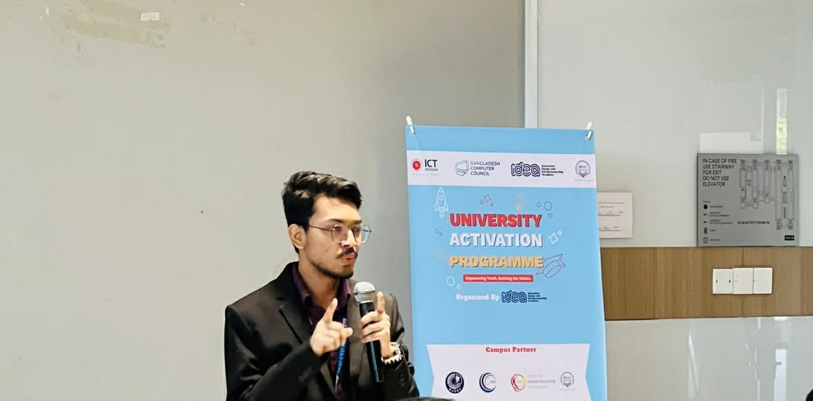

LIVE STAGE · VOICE & PRESENCE
Hosting & Anchoring.
From grand freshman orientations and campus-wide festivals to international academic symposia and national championships—commanding the room with energy, narrative flow, and spontaneous connection.

Club Fair Fall '26
Master of Ceremonies & HostAnchored the grand campus-wide Club Fair, welcoming students and club delegates across the university. Energized the open stage with lively crowd interactions, club announcements, and high-spirited student engagement throughout the recruitment showcase.

Club Fair Summer '25
Main Stage Anchor & HostSpearheaded live announcements, student club showcases, and crowd engagement across the university-wide Club Fair. Interacted continuously with passing crowds, coordinated performance call-outs, and sustained high energy throughout a multi-hour open campus festival.

Prelude Summer '25
Official Stage Host & MCSelected to host BRAC University's flagship freshman orientation ceremony, Prelude Summer 2025. Guided thousands of new undergraduate entrants and guardians through formal leadership remarks, academic guidelines, student services introductions, and celebratory performances.

Scholarly Yours with APU
Academic Moderator & AnchorFacilitated an international collaborative scholarly session with faculty delegates and student scholars from Asia Pacific University (APU), Malaysia. Handled formal speaker introductions, moderated live interactive Q&A discussions, and ensured seamless diplomatic protocol across international platforms.

Prelude Fall '25
Ceremonial Host & AnchorReturned to the grand university auditorium to anchor Prelude Fall 2025, welcoming the semester's substantial incoming batch. Orchestrated transitions between senior administration speeches, campus life orientations, and vibrant student cultural showcases with flawless pacing.

IDEA
Pitch Stage Host & ModeratorAnchored the pitching rounds and grand showcase of IDEA—the innovation, design, and entrepreneurship competition. Guided student startup founders through rigorous pitch clocks, welcomed venture judges, maintained high-stakes momentum, and hosted the final award ceremony.

Epoch Shift Panel Handover
Master of CeremoniesPresided over the formal executive panel transition ceremony. Commemorated the accomplishments of outgoing student leaders, read formal citations, welcomed the newly elected panel, and upheld the organizational traditions and dignity of the student body.

Prelude Spring '26
Lead Stage Host & MCLed stage anchoring for the commencement of the new academic year at Prelude Spring 2026. Welcomed the incoming freshmen with practical student advice, led interactive question breaks, and ensured harmonious coordination between backstage tech teams and stage speakers.

Fazle Abed Open Rated Chess Tournament
Tournament Anchor & Award MCAnchored the official opening and grand prize-giving ceremony of the prestigious Sir Fazle Hasan Abed Open Rated Chess Tournament. Honored the enduring humanitarian legacy of Sir Fazle Hasan Abed KCMG, introduced national chess arbiters, and presented trophies and honors to rated champions.

CSE470 Project Demonstration
Showcase Moderator & Stage Flow HostModerated the capstone project demonstration and technical evaluation day for CSE470 (Software Engineering / Capstone Project). Introduced evaluation panels, scheduled live software demos across student engineering teams, and guided question rounds with technical fluency and precision.
“A microphone is an instrument of empathy, timing, and connection. You don’t just speak to a room—you guide how it feels.”
— Md. Ishtiaq Mozumder
Reflections gathered across orientations, technical summits, and stage moderations.
WHAT I BRING TO THE MIC
Hosting competencies.
Key abilities refined through diverse stage formats, high-profile guests, and unpredictable live environments.
Auditorium Projection
Vocal clarity, intentional modulation, and steady stage presence capable of commanding 1,000+ attendee auditoriums.
Live Improvisation
Adaptive problem-solving that smoothly covers backstage delays, tech glitches, or sudden agenda shifts without missing a beat.
Dignitary Protocol
Respectful, well-researched introductions for university leadership, international scholars, industry executives, and faculty.
Scripting & Flow
Writing and refining run-of-shows, engaging transitions, and meaningful citations tailored to the event’s purpose and atmosphere.
LOOKING FOR A HOST?